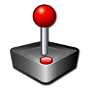

ArcadeBox
Descrizione
Un programma per PC che emula un cabinato degli anni 90’ (almeno a livello grafico), in cui poter giocare a vari giochi sviluppati con GameMaker. Ho deciso di chiudere il progetto dopo aver capito che, per quanto potesse essere una soddisfazione personale aver creato dei giochi per PC, non avrebbe avuto un’utilità condivisa dalla maggior parte delle persone, tranne che per qualche “nerd” a cui piace smanettare al PC come me.
Game Maker
Anteprima
